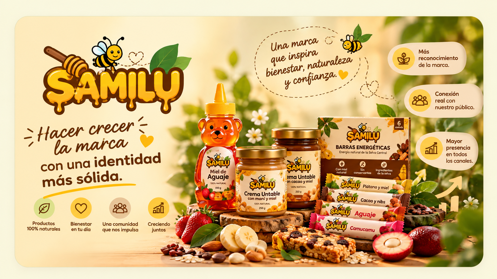
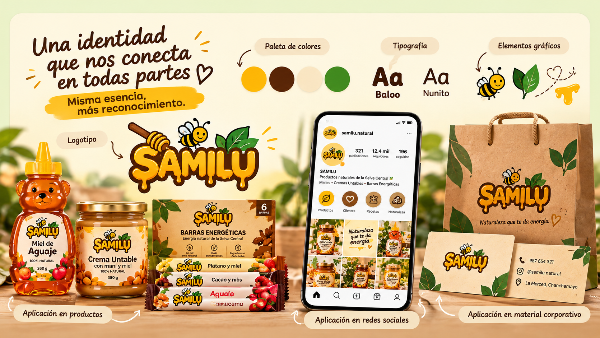

Unificar criterios
Mantener los mismos criterios visuales en los diferentes medios de comunicación de la marca.

Las siguientes propuestas buscan fortalecer la presencia visual y comunicacional de SAMILU para mantener una marca coherente, reconocible y cercana en sus diferentes puntos de contacto.
Explorar propuestas ↓
Las propuestas se organizan en cuatro áreas para facilitar la aplicación de la identidad de SAMILU en sus materiales, canales digitales y puntos de contacto con el público.
Desarrollar y aplicar un sistema visual que establezca claramente los usos del logotipo, colores, tipografías y elementos gráficos de SAMILU.
Mantener los mismos criterios visuales en los diferentes medios de comunicación de la marca.
Utilizar de forma constante el logotipo, colores y elementos gráficos definidos.
Crear una identidad que permita reconocer rápidamente a SAMILU en medios físicos y digitales.


Crear materiales promocionales que permitan presentar la crema untable, las barras energéticas y la miel saborizada de manera atractiva y coherente.
Destacar su presentación y características mediante piezas visuales claras y atractivas.
Comunicar de forma visual su practicidad y propuesta como producto derivado de la miel.
Reforzar la variedad de sabores mediante composiciones llamativas y fáciles de comprender.
Incorporar la identidad visual de SAMILU en afiches, empaques, letreros y otros materiales promocionales para crear una experiencia visual coherente.
Aplicar de manera constante los colores y tipografías establecidos para reforzar la personalidad visual de SAMILU y evitar variaciones innecesarias.
Mantener las tipografías establecidas para conservar una comunicación visual reconocible.
Utilizar de manera constante el dorado, marrón, verde oscuro, verde claro y crema.
Conservar una apariencia uniforme en materiales impresos, digitales y publicitarios.

La aplicación constante de estas propuestas permitirá fortalecer la identidad de SAMILU y mantener una comunicación visual coherente en sus diferentes puntos de contacto.